Barn Art
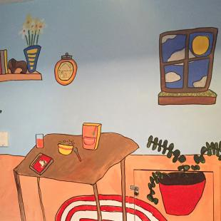
Alyssa Yohana
Alyssa Yohana
Muralist in 2L 2015
Allyssa Yohana is an NYC-based artist originally from New Orleans. She’s a lover of pups, pizza, and makin’ art with her buddies. You can follow her on tumblr http://dogflower.tumblr.com/
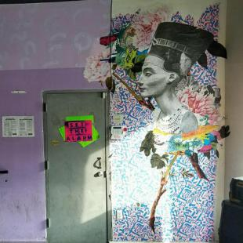
Anna Rindos
Anna Rindos
Nefertiti Collage in The Main Room 2016
A native of North Carolina, Anna currently lives in Brooklyn, NY. Inspired by the idea of combining contradictory tastes and states, Anna's collages explore the idea of melding chaos with calm, masculine with feminine and the beautiful with the ugly.
When not making things, she can be found on the dance floor, sun soaking or strolling through Prospect Park.
"I want to make art in the space because I feel really passionate about the Barn. It's such an amazing space for people to share their work and meet other inspiring, creative people. It feels like such a community- and I'd love to be able to share my work in a space that I always feel so welcomed when I enter. I hope that my art in the space inspires other- while jazzing up the walls! The image is of Nefertiti. It stood out to me because they were such a strong powerful person, who really defied and pushed "standard" gender roles during their time."
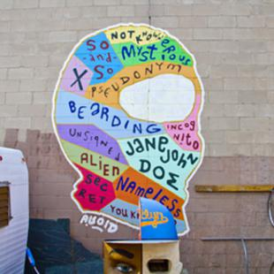
AVOID
AVOID
Adam Void- Muralist Exhibiting in the Yard
Adam Void transforms the debris of contemporary society into works that address social & political issues of class, control, and community. He is dedicated to exploring the details of countercultures particular to his experience: DIY culture, graffiti, hard traveling, social activism, mysticism, and the concept of "the outsider."
Many years ago, Adam Void decorated the basement of the former Silent Barn space with blue paint and circular black-and-white wheatpasted patterns. At our new space, Adam Void painted a mural in our yard toying with the concept of concealment.
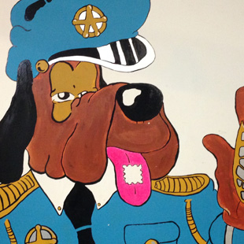
Brian Blomerth
Brian Blomerth
Brian Blomerth is a cartoonist, a musician (as Narwhals of Sound), an artist, and a former Silent Barn resident. His work even adorns the walls of the Silent Barn’s main show space.
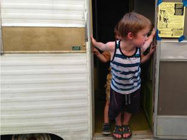
Canned Ham
Canned Ham
The Canned Ham, a 24 hour studio for traveling artists and musicians, is a 10’ x 6’ vintage 1972 Shasta “canned ham” style travel trailer with a sink, oven/stove, heater/ac, storage + electric hookup. The Canned Ham was purchased as a traveling renovation project for Silent Barn residents, Shane Suski and Katie McVeay, and was their home prior to residency at Silent Barn. The Canned Ham has now been repurposed as a cozy spot for travelers to work (or unwind) and find the comforts of home.
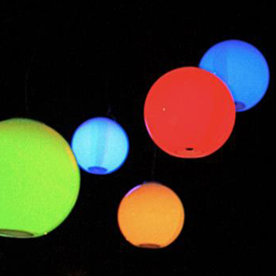
Casperelectronics
Casperelectronics
Sound Reactive Orbs in the Main Room (Spector)
Specter is as a collaboration with Peter Edwards and Chris Scully. It was a commission for the Tang Museum as a sound installation for their series “elevator music” and was funded in part by the New York Foundation for the Arts. It has been displayed at the Tang Museum (Saratoga Springs), Flux Gallery (Long Island City) and the Silent Barn (Brooklyn)
Specter is a sound sensitive installation. Sounds generated near the orbs cause them to glow at varying hue and intensity. This profoundly impacts how the viewer perceives and appreciates sound. It places a new value on the incidental ambient sounds of the environment and inspires viewers to generate their own sounds. The audience becomes the sound installation.
Each orb contains a microphone, 3 high power LEDs and analog/digital circuitry for analyzing and processing ambient noise. The frequency of the sound controls the color and the amplitude controls the brightness.
Peter Edwards is an American artist, musician, and teacher. He has been exploring the field of circuit bending and experimental musical electronics since 2000 through his business Casperelectronics. He performs regularly under the same name.
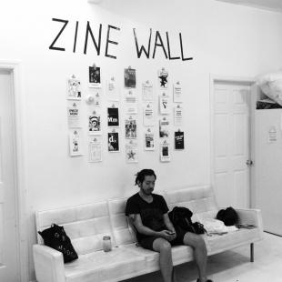
Ditko Zine Library
Ditko Zine Library
The Ditko Zine Library is a collection of small press comics and zines available to patrons of the Silent Barn. The dzl also organizes the twice annual paper jam small press festival to showcase local small press creators.
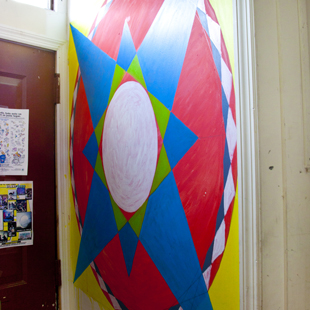
G Lucas Crane
G Lucas Crane
Muralist Exhibiting in the Resident Hallway
G. Lucas Crane has been creating tape collage music for over a decade, publishing under the solo moniker Nonhorse, and collaborating in groups such as Woods, Ogg Myst, and Wooden Wand and the Vanishing Voice. The stairwell leading to the second floor residences is covered in the hand-decorated cassettes used for audio collages, and from Crane's personal collection.
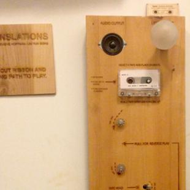
Genevieve Hoffman
Genevieve Hoffman
Interactive Sound Installation in 3L 'Tape Translations'
Hoffman contributed Tape Translations to Silent Barn's event "50 Years of Cassette Tapes" in 2013, and her work remains exhibiting on the third floor of Silent Barn. A student project at NYU's Interactive Telecommunications Program, Tape Translations lets users pull magnetic tape back and forth for experimental playback of sound and light. Today, much of Hoffman's work is sculptural, using experimental landscapes to embody data about human influence on ecology.
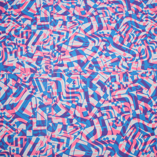
Issac T. Lin
Issac T. Lin
b. 1976 Lives and works in Philadelphia
Images Bio / Exhibition History Isaac Tin Wei Lin explores the realm where representation and buzzing abstraction meet. His surfaces are often densely covered in calligraphic, brushed and hand-drawn patterns that express both the logic and complexity of written language. Cartoon figures, often in the form of cats and dogs, make appearances, sometimes as larger-than-life-size cut-outs covered in pattern themselves. Working across painting, screenprinting, collage and installation, Lin also collaborates with other artists and photographers in creating hybrid works. He is an alumnus of Philadelphia's artist collective Space 1026.
Education 2005 Skowhegan School of Painting and Sculpture, Residency Participant 2005 California College of the Arts, MFA Drawing/Painting 1998 Rhode Island School of Design, BFA Painting
Public Collections Berkeley Art Museum The Philadelphia Museum of Art The Free Library of Philadelphia
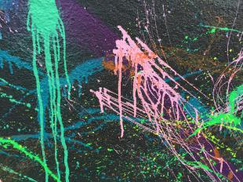
Johnny Y3
Johnny Y3
Muralist in Silent Barn Yard
Johnny is 15 a Brooklyn native, living in Bushwick since he was 6 years old. He's currently a sophomore in high school at Health Professions in the city. Basketball and painting are his two favorite extracurricular activities. He's currently on two basketball teams and is looking to advance his opportunities in the arts at The Silent Barn.
You can follow him on instagram @jy3visuals
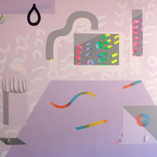
Lena Hawkins
Lena Hawkins
Mural in Manhattan Room
Lena Hawkins is a visual artist making paintings, silk screen prints, and performance art based in New York City. Her recent visualizations express moods of pure terror, constructed realities, and death. Hawkins studied art and design at Central St. Martins College and Parsons New School for Design graduating with a BFA in 2010. She is a Flux Factory Artist in Resident and has shown work at a variety of performance and art spaces in New York including Triskelion Arts, AUNTS @ Art Renaissance, Theater for the New City, Silent Barn, chashama, and the Bushwick Trailer Park. Hawkins is a member of the Sunview and the Zodiac Club. Hawkins other interests include the Tarot, altered states, and tattoos. If interested in getting a stick and poke tattoo from please email for an appointment.
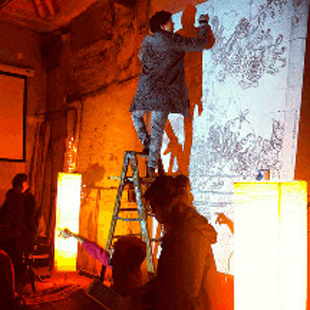
Luca Chiriani
Luca Chiriani
Muralist Exhibiting in Gravesend Recording Studio
Luca's work constitutes an open source aesthetic system of artistic construction, whereby art is both produced and consumed by the viewer. His process begins with collecting data relating to a specific topic from participants. This information is then captured and consolidated into a precisely executed data amalgamation. Therefore he envisions the role of the artist as a sort of human search engine, a filter through which content is collected, aestheticized, and subsequently redistributed.
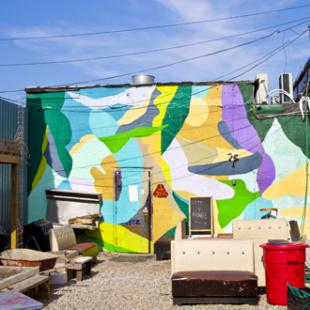
Morgan Blair
Morgan Blair
Yard Mural
Morgan Blair is a Brooklyn based painter known for her kaleidoscopic patterns, dayglo colors, and immersive scale. She is also known for oil paintings of classic Seinfeld moments. After her temporary work on Silent Barn's facade rotated out, Blair created a massive permanent mural on our North garage, greeting all who enter our space. A graduate of the Rhode Island School of Design, Blair has exhibited at Cinders Projects, The Ace Hotel and the Chinatown Arcade, among many others.
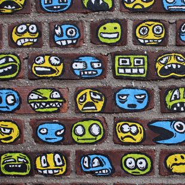
Preston Spurlock
Preston Spurlock
Preston Spurlock is a South Florida-born musician, filmmaker, and visual artist currently living in Brooklyn. He makes Animation, illustration, video, collage, paintings, comics, found footage, music, gifs, etc.
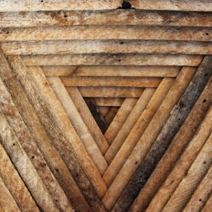
Serra Victoria Bothwell Fels
Serra Victoria Bothwell Fels
Wooden Installation in the Manhattan Room
Fels creates large wooden sculptural installations built from discarded housing materials. She has exhibited widely in galleries such as Clocktower, Reverse, Cinders, the Sculpture Center and Cargo.
Her work often engages the architecture of a room to create new uses of space. At Silent Barn, Fels' work is both a backdrop for performers, and creates an area simultaneously useful as a backstage area and an ad hoc gallery for passerbys of our window-front.
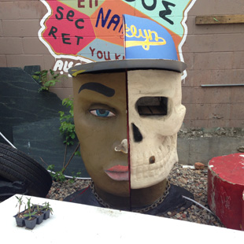
Show Paper Box
Show Paper Box
Barn Wildling
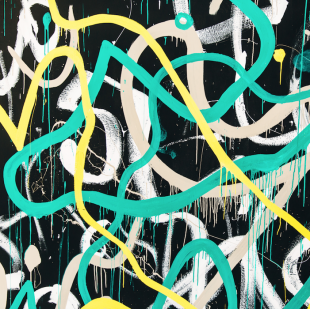
Sto Len
Sto Len
Line-Mining the Silent Barn Wall, August 3rd 2015 (Mural in Main Room)
Sto Len is a painter, sculptor, sound and performance artist based in NY. His emphasis in any medium is to improvisationally find form by giving up complete control during the process. His current work is inspired by natural elements including water, oil, dirt, pollution, insect larvae, and the sun. From detritus-infused marbled paintings and printmaking off of the NYC waterways to rhythmic abstract murals inspired by monks and leaf-eating insects, the process is just as important as the result. In his sound and performance work, Sto focuses on touch, light, and movement using contact microphones, homemade primitive instruments, found objects and the physical space around him.
Sto has exhibited his paintings and sculptures internationally, including exhibitions in NY, Los Angeles, Florida, San Francisco, Japan, London, Australia, Denmark, Canada and Mexico City. In 2004, Sto founded the alternative arts space Cinders Gallery in NY which has organized hundreds of exhibitions and has since become a project-based non profit. Sto has been a resident artist at the Clocktower Gallery in NY. He has performed at MOMA PS1, New Museum, St. Marks Church, Ramiken Crucible and Roulette in New York in addition to Latelier Kunst Spiel Raum in Berlin, Theater de Chameleon in Amsterdam, Apiary Studios in London, La Société de Curiosités in Paris and Hanoi Rock City in Vietnam. His work is in numerous collections including the Museum of Modern Art Library in NY, the West Collection in Pennsylvania, Tyler School of Art, Yale University Library, University of Connecticut, and San Diego State University.
www.stoishere.com
www.cindersgallery.com
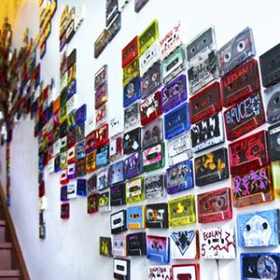
Tape Museum
Tape Museum
G Lucas Crane
G. Lucas Crane has been creating tape collage music for over a decade, publishing under the solo moniker Nonhorse, and collaborating in groups such as Woods, Ogg Myst, and Wooden Wand and the Vanishing Voice. The stairwell leading to the second floor residences is covered in the hand-decorated cassettes used for audio collages, and from Crane's personal collection.
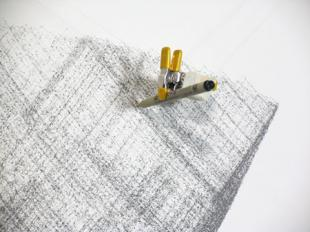
Tristan Perich
Tristan Perich
Machine Drawing in The Pleasure Jail
The Machine Drawings, automatically created over days, weeks or months using a motor controlled pen designed and created by Perich, use "randomness and order as raw materials" to guide the pen's path. Our upstairs space, in which we host intimate performances among friends, is his first permanent installation in Silent Barn, though Perich has performed frequently with us over the years. Other Machine Drawings are exhibited in spaces such as the Georgia Museum of Art and Katonah Museum of Art.
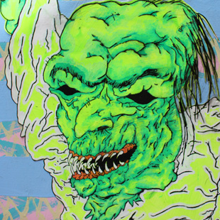
Troll Master 2000
Troll Master 2000
by Boats
Boats is David Owen Beyers, artist and experimental electronic video game musician. 90's mtv art, and footbag $$$ socccer freestyle. http://soundcloud.com/boatsoundz
The bathroom troll was a project that Kate Kosek asked David to make because Kate is really into the movie Troll 2 and thought it would be funny if I made a troll. It's green just like the green food in the movie and the troll is reaching for the handle like he's going to go into the bathroom.
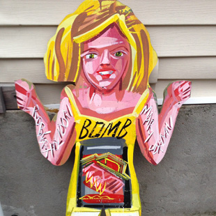
Wildling
Wildling
Artist Unknown
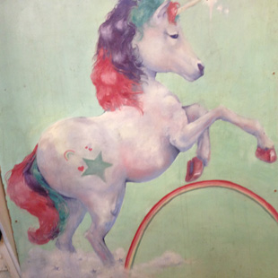
Wildling
Wildling
Artist Unknown
Past galleries
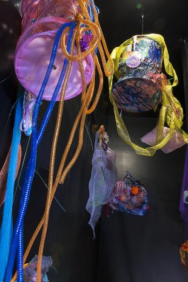
Aimee Hertog
Aimee Hertog
Encircled and Enmeshed
The use of found objects is integral to Aimee's installation and sculptural works. Recycling utilitarian objects, she creates sculptural forms from materials such as discarded clothing, kitchenware, dead flowers, and broken glass. While some of these materials are transformed or deconstructed, others are left in their raw state. Often the work takes the form of grotesque female figures. Distended, entangled, and sometimes literally left hanging, these pieces reflect the struggle women face in constructing and guarding their identities.
http://aimeehertog.com/
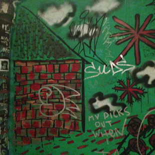
Arielle Avenia
Arielle Avenia
Muralist Exhibiting in the Break Room Bathroom
Arielle Avenia graduated from the Rhode Island School of Design in 2010 for printmaking. She has worked the creative spectrum in NYC: embroidering paintings for Ghada Amer, turning a dilapidated boat into a floating art installation at Swimming Cities's Boatel, teaching and making zines at the Museum of Modern Art, fabricating props for National Geographic, sewing and designing costumes for off-Broadway plays at Make Fun Studios.
Arielle currently resides in Brooklyn and is a full-time Lego sculpture fabricator in Queens. For fun, she sews herself outfits, works at the farmers market, rides bikes, and hoards art supplies.
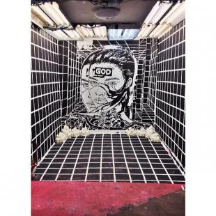
Big Law Country Club Gallery
Big Law Country Club Gallery
Alison Sirico
Big Law Country Club is a gallery in Bushwick, Brooklyn, located inside the Silent Barn. Its mission is to integrate a rotation of visual art into the DIY music scene. The gallery offers emerging installation artists, working within a variety of mediums, a platform to showcase their work in a high-traffic, non-commercial environment.
Big Law Country Club is run by Alison Sirico.
(Image: James Moore's "Crystalline Mind")
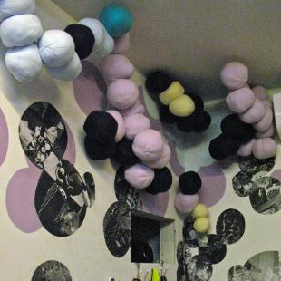
Chrissy Reilly and Elaine Winter
Chrissy Reilly and Elaine Winter
Hanging Circles and Collage in The Main Room
Chrissy Reilly is a business consultant and creative director for photographers, fine artists and musicians as well as an aspiring artist and designer. She holds her MFA in Fine Art from The City College of New York. Currently, she lives in Brooklyn NY with her boyfriend and their two dogs, Buddy and Batman: The Movie: The Dog. She is the former VP Creative and Operations Director of WIN-Initiative a boutique photo agency and has worked as a designer and creative director on many publications including WiNK, VAR, and was US Content Editor for UK based Applejuice Magazine. She has been invited to lecture at SVA, ICP and City College. The highlight of her career thus far is being able to inspire photographers, artists and musicians and help them advance their careers albeit it through donating her time to review portfolios, organize career building events, how to build better business practices, and lecture on how to make a living through the arts.
Chrissy can often be found in the Silent Barn’s South Garage creating art or jewelry for her own hand-made line WAXTHEDUCK. At The Silent Barn, she is currently the Art Co-Chef, Newsletter Sous Chef and Stewdios Sous Chef.
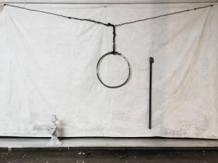
Crypt Keeper 14
Crypt Keeper 14
Eric Carlson- Silent Barn Studio Residency (Crypt Keeper 14)
Suppression Mural for Glistening Tomb: In the Well of Light (working title)
Eric Carlson has conducted a 6 month studio residency producing a site specific installation and developing the basement of the Silent Barn as functional site therein. The resulting work will be opened to the public for Bushwick Open Studios as the inaugural event taking place in this location of the Silent Barn.
Eric Carlson maintains a diverse creative practice employing acts of painting, found material, and design to produce scenario specific bodies of work, often resolved as sculptural environments.
Eric Timothy Carlson (b. East Bay, CA., 1984) lives and works in Brooklyn. Recent solo exhibitions include Good Press Gallery, Glasgow (2012); Soo VAC, Minneapolis (2011); and Mondo Cane, NY (2012). His collaborative projects have been presented at Minneapolis Institute of Art (2009); Synchronicity Space, Los Angeles (2012); and Brooklyn Arts Council, New York (2012); and with groups at Merchant's House Museum, NY (2013); Van Abbe Museum, Eindhoven, NL (2009); and the Museum of Arts of Design, NY (2013). He has published artist’s books with Museums Press; Journal of Artist Books; and Location Books. He received his BFA from MCAD in 2006.
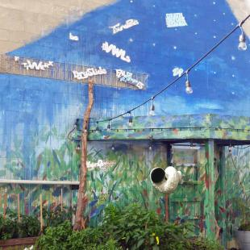
ECOAGE
ECOAGE
Mural in Garden 2015
ECO AGE is a happening. Art, sounds, and performances of our future Ecological Age. Founded by Bushwick-based artists Emmaline Payette and Paulapart.
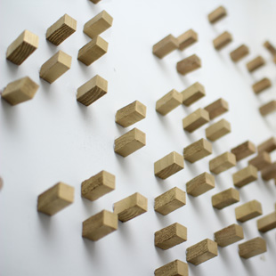
Eli Lehrhoff
Eli Lehrhoff
Eli Lehrhoff seeks to communicate grand ideas represented in the small scale and the small ideas present in the current popular realm. Through drawing, print, sculpture, and musical collaborations (most prominently in dubknowdub with the artist sTo and Hair Jail with artists Raul De Nieves, Nick Lesley, and Zach Lehrhoff) he seeks to synthesize the meeting place of the macro and micro in various attempts to understand magic and science as a single entity. He lives and works in Brooklyn, NY.
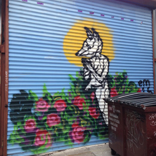
Emily North
Emily North
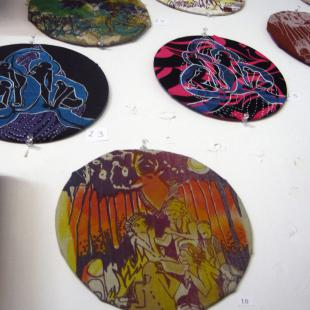
Hannah Thompson
Hannah Thompson
One Month Art Install in Main Room 2015
Thompson is a Providence, RI based artist, working in print media and fabric sculpture. Through prints and sculpture, Thompson creates immersive installations and wearable sculptures. Her fabric sculpture is performed in ways that uncover new layers and allow the audience to enter in the work as it blooms to soundscapes on mixed-tapes. In her print work she references the whimsical and dark worlds that she creates in her performances. She often tours with her work and distributes “the seed” of her print work after performances.
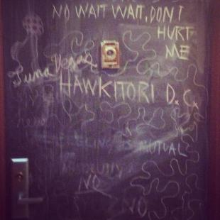
HAWKiTORI Dinner Club
HAWKiTORI Dinner Club
Silent Barn Resident Project 2014
A Gluten Free Quad Monthly Adventurous Dinner Club inside Silent Barn. Dinner is at 7pm "ON THE DOT"unless otherwise noted. Hawkitori Dinners are $25 and include Drinks and Dessert!
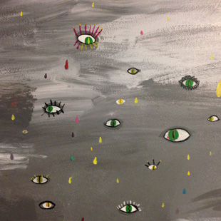
Jackie Du
Jackie Du
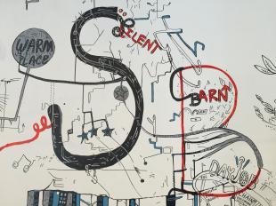
Jason McLean
Jason McLean
Muralist in Main Room Side Wall 2015
A Canadian artist of diverse practices and mediums, Jason McLean is best known for his work in found objects and highly personal, complex and surreal drawings – a network of tangential messages and objects that function like a map of his life and society. He now lives and works in New York City.
Jason McLean’s diverse practice includes sculpture, sound works, zines, book works, mixed-media installations, correspondence art, puppets and performance but he is probably best known for his complex, diaristic and surreal drawings. He says his work “taps into the world of my mind” and across a variety of media he creates a web of tangential messages that incorporate text and imagery alluding to quotidian events, pop culture references, music lyrics, inside jokes, and friends and family into a semi-automatic map of his inner world and daily life. His work contains an incredibly wide range of references and influences – from his children’s art to On Kawara post cards to MLB baseball to the design on boxes of frozen pizza. This former Vancouverite has moved back to his home province of Ontario where he has an upcoming solo exhibition at Jessica Bradley Gallery, Toronto, which will feature drawings and sculptures fashioned from found objects he has completely transformed.
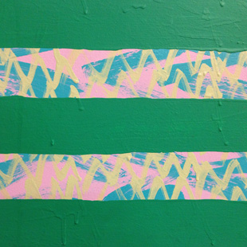
Kate Kosek
Kate Kosek
Muralist Exhibiting in the Manhattan Room 2013
KATE KOSEK LIVES + WORKS IN BROOKLYN, NY.
Inspired by color and geometry, her work is a mash-up of the 60's op art movement and the MTV/Nickelodeon days of the 90's.
"I like to manipulate patterns found in nature with those contrived in my mind. My compositions are mathematical and systematic, their obsessive nature serves as an act of meditation. I am constantly sourcing ideas from historical and contemporary architecture, geometry, and textiles".
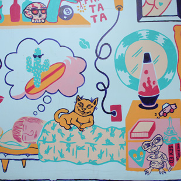
Killer Acid and Caca Pasa
Killer Acid and Caca Pasa
Rob Corradetti is an artist and musician born in Philadelphia, PA. He has called New York City his home for 15 years. His drawings swarm with otherworldly characters, satanic monsters, perverted aliens, and rock and roll burn-outs. His Screen Prints are a marriage of intricate pen and ink drawings, cut and paste collage, and intense pop psychedelic colors. He is heavily influenced by rock music, mythology, comics, pop art, dreams, and nightmares. Rob has also created artwork bands including Thee Oh Sees, Man Man, Blonde Redhead, Quintron, Ty Segall, The Black Lips, Surfer Blood, and many more.
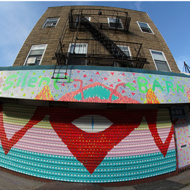
Kosek / Boatz
Kosek / Boatz
Silent Barn Front Rollgate 2013
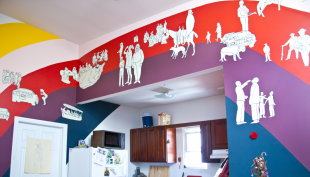
Lena Hawkins
Lena Hawkins
A current artist in residence at Flux Factory, Lena Hawkin's visual artfocuses on the themes of surrealism, horror, sexuality, and ritual. Her studio practice includes set, prop, and costume design, video, performance, painting, silk screening, and photography.
Silent Barn's own artists in residents host Hawkin's mural "The Meat Salesman" in apartment 3L, depicting appropriated scenes which through juxtaposition conflate time-period, action and human forms in ambiguous and surreal ways. Hawkins says the mural, painted April 2013, "is part of a larger body of work that explores the narrative of locations - these locations are alternate realities. I consider these pieces storyboards for a future film."
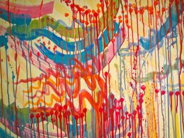
Martha Moszczynski
Martha Moszczynski
Mural in Hallway 2013-2015
Martha Moszczynski (b.1982, Detroit) joined Silent Barn as a studio resident in 2013. Rooted in painting, her multivariate practice embodies muraling, site-specific installation and sculpture. Defined by confetti-like palettes detonating into sprawling, emotionally chaotic compositions, her work obscures boundaries between catharsis and distress.
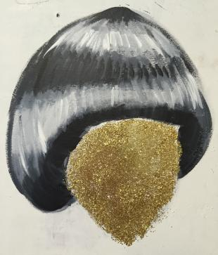
Mary Houlihan
Mary Houlihan
Muralist in Main Room Behind the Stage 2015
Mary Houlihan is a stand-up comedian, writer, actress, animator, and visual artist living in Brooklyn, NY USA. She recently won several rounds of the 2015 Caroline’s March Madness stand-up tournament. You might have seen her playing “Lana Del Rey #3” on an episode of Billy On The Street. She is a writer, actor and co-creator of MEAT videos with Keaton Monger and Sam Taggart. She is the co-creator of “Cartoon Monsoon,” a touring theater show consisting of comedic characters and animations. She curates and produces “Comedy Cassette Tape,” an art object/cassette tape with Mike Nigro of the Oxtail Recordings label. She received a BFA in Painting from San Francisco Art Institute in 2011, and has shown at the Diego Rivera Gallery (SF), Root Division (SF), Family Business (NYC), Babycastles (NYC), Dacia Gallery (NYC) and currently has a mural on display at The Silent Barn (NYC). You can commission a cheap painting here. She hosts and produces CUBE Comedy Variety Show with Sam Taggart at Muchmore’s in Williamsburg, every third Monday of the month.
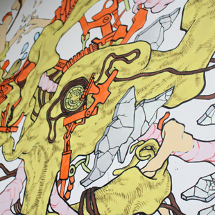
Matthew Brennan
Matthew Brennan
Muralist Exhibiting in the Manhattan Room 2014
Matthew Brennan is a visual artist who has painted at Little Skips and works at Reverse Gallery. His mural in the ground floor performance space at Silent Barn depicts broken CDs , tangles of magnetic tape and what ambiguously resemble intestines. Brennan also uses magnetic tape heavily in his audio collage work.
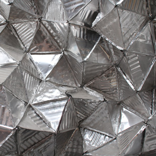
Megan Moncrief
Megan Moncrief
Installation in the Main Room Basement Doorway
Megan Moncrief is a Brooklyn musician and visual artist. Her primary project is called Lazurite; the majority of her work employs the ukelin (a 36-stringed invention sold door to door during the Great Depression). String drones, feedback, and percussive strikes bleed together with synths, homemade effects, and drum loops, all processed through the ominous digital buzz of a stack of throwaway pedals. The first Lazurite tape, Secular Geometry, was self-released in 2011. A forthcoming self-titled release will come out on Fabrica later this summer.
Megan got involved at Silent Barn after running a similar space at their alma mater SUNY Purchase known as the Stood. Since moving to Brooklyn and beginning at the Silent Barn they have been making zines, one of which was published by Mt. Home Arts, booking shows, helping with PR, and joining the safer spaces committee. During their residency their intention for their apartment, known by many as Hawkitori, is to organize public zine workshops and hold weekly hours for Silent Barn's extensive zine library.
Press:
http://adhoc.fm/post/upstream-11-lazurite-kevin-costner-suicide-pact/ http://www.the22magazine.com/V3/Pages/MeganMoncrief.html http://www.imposemagazine.com/bytes/lazurite-the-moon-reversed http://www.studiobobo.com/ukelin/ukelinfive.html#anchormegan http://boomforrealblog.com/2011/08/27/lazurite-secular-geometry/
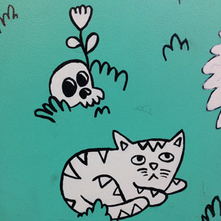
Michael Seymour Blake
Michael Seymour Blake
Muralist Exhibiting in the Manhattan Room 2014-2015
Michael Seymour Blake is an art creator and admirer, person who says "hello puppy" in a weird voice whenever he sees a dog, and hypochondriac extraordinaire. He has lived in New York his whole life and has a love/hate relationship with it. He likes talking at length about movies, books, and comics. He also enjoys toys, food, and old stuff (but not old food).
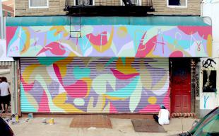
Morgan Blair
Morgan Blair
Rollgate and Awning Mural
Curated by Eli Lehrhoff, Morgan Blair's spring 2013 mural on the facade and rollgate of Silent Barn was a temporary work at Silent Barn, succeeded by her permanent mural in our yard. Morgan Blair is a Brooklyn based painter known for her kaleidoscopic patterns, dayglo colors, and immersive scale. She is also known for oil paintings of classic Seinfeld moments. A graduate of the Rhode Island School of Design, Blair has exhibited at Cinders Projects, The Ace Hotel and the Chinatown Arcade, among many others.
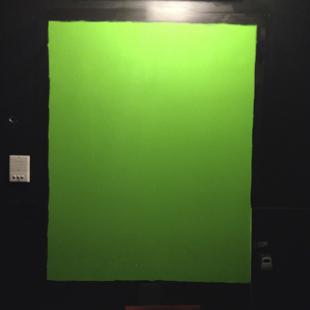
MPEG
MPEG
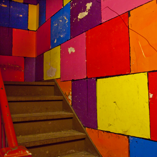
Nick Chatfield-Taylor
Nick Chatfield-Taylor
Installation in the Resident Stairwell
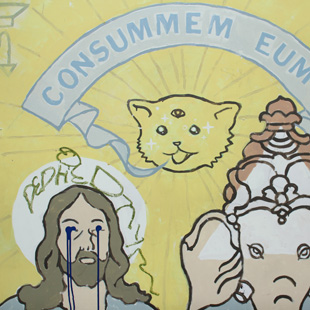
Peter Edwards
Peter Edwards
Muralist Exhibiting in the Manhattan Room 2013
Peter Edwards is an American artist, musician, and teacher. He has been exploring the field of circuit bending and experimental musical electronics since 2000 through his business Casperelectronics. He performs regularly under the same name.
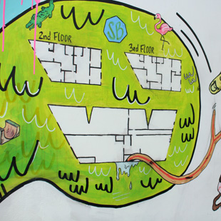
Sun Color
Sun Color
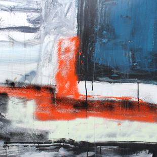
Ted
Ted
The Center for Strategic Art and Agriculture
The Center for Strategic Art and Agriculture
Lorissa Rinehart
CSAA (Center for Strategic Art and Agriculture) is an art gallery and urban agricultural hub located within The Silent Barn, through vibrant sound and visual arts programming, CSAA provides a space for emerging artists and young independent curators to present aesthetically interesting and socially engaged works in a multitude of mediums.